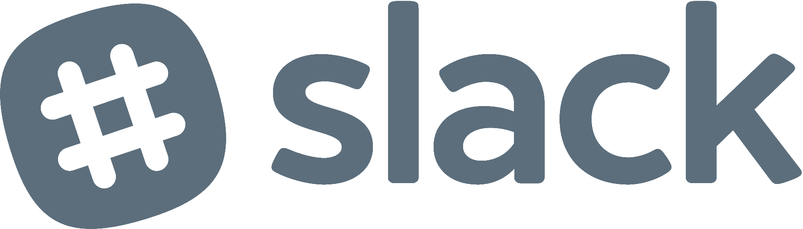

NotreDevelopers
.png)
NotreDevelopers (NDevs for short) is a club where people can learn about video game design and development and, if they have enough interest, practice one of the many skills involved (game design, 3D modelling, graphic design, programming, music, etc) and use those skills to create games, as individuals or in groups. The club hopes to sponsor game-related events (lectures, game jams, conference trips, etc), provide members with hardware and software for game development (VR equipment, game engines, servers, etc), and increase the presence of video games as a relevant form of media on Notre Dame’s campus.
Come to our meetings at 117 Haggar Hall (north end of North Quad), every Sunday at 2pm, to learn and practice game development!
Contact us at:
ndevs@nd.eduAnd join us on:
Levi is a Junior, studying Physics with minors in Computer Science and Japanese. Beyond NotreDevelopers, he works as a camp counselor for Camp Kesem ND, leads and helps out with various groups in Zahm House (his dorm), and is employed by the university as a Peer Advisor.
In his free time, Levi enjoys reading fantasy novels, watching TV with his roommates, practicing guitar, and (of course) playing video games. He likes all sizes and shapes of games, but some of his favorite games are Bioshock, The Legend of Zelda, and Ratchet & Clank. He hopes his experiences through NDevs will show him whether a future career in video game development is a possibility.
Paul is a Sophomore studying Computer Science, residing in Dunne Hall (the newest dorm on campus). He’s lived by ND his entire life, a.k.a a townie.
Paul loves a variety of games, but he especially likes 2D platformers, shooters, and RTS games. Also, he likes indie games such as Limbo, Ori and the Blind Forest, and Dead by Daylight. He is excited to start this new journey, and can’t wait to see where it takes him and everyone else.

Andy is a Junior studying Computer Science and Physics, and is a resident of Knott Hall. Born and raised in the Chicagoland area, he currently resides in Colorado.
Beyond schoolwork, Andy enjoys working on his own projects and travelling. Some of his favorite video game related projects include a brick breaker style game and a Flappy Bird clone. His favorite aspect of video game development is working on the mechanics of the game. Some of his favorite video games include Destiny and Skyrim, as well as much simpler games such as 2048.
Sean is a Senior studying Chemical Engineering. He is off campus this year but was a proud resident of Siegfried Hall and is from the north suburbs of Chicago. He loves boating, swimming, reading sci-fi and watching movies.
Sean's interest in video game development started in high school when he taught himself Objective-C to make iPhone games. From there, he moved onto website development but his project experience in research labs and class has allowed him to continue exploring other programming languages. Video games are a fun pastime for him and some of his favorites include Minecraft, Call of Duty, and Battlefront.
Dr. Villano serves as the Assistant Director of the eMotion and eCognition Laboratory where he conducts research in human robotic interaction and applications of video game and robot technology to a variety of health and social issues. Current projects include scaffolding social skills in autism therapy with humanoid robots, rehabilitating stroke patients using Wii Balance boards, and investigating moral decision-making of drone pilots in a simulated 3D game environment.
Prior to returning to the academic environment, Dr. Villano conducted research and development for various industries in e-commerce, web-based electronic performance support systems, human-computer interaction, ergonomics and computer-based simulation and training. Dr. Villano is also the faculty supervisor for the Psychology Department’s undergraduate and graduate computer clusters and provides research computer consulting to the Psychology Department.